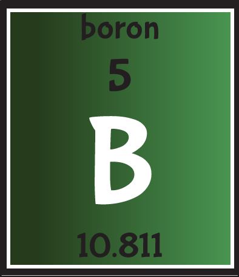

Boron

Boron is produced entirely by cosmic ray spallation
and supernovae and not by stellar nucleosynthesis as it is with most elements,
it is a low-abundance element in the Solar system and in the Earth's crust.Boron
is concentrated on Earth by the water-solubility of its more common naturally occurring
compounds, the borate minerals. These are mined industrially as evaporites, such as borax
and kernite. The largest known boron deposits are in Turkey, the largest producer of boron
minerals.